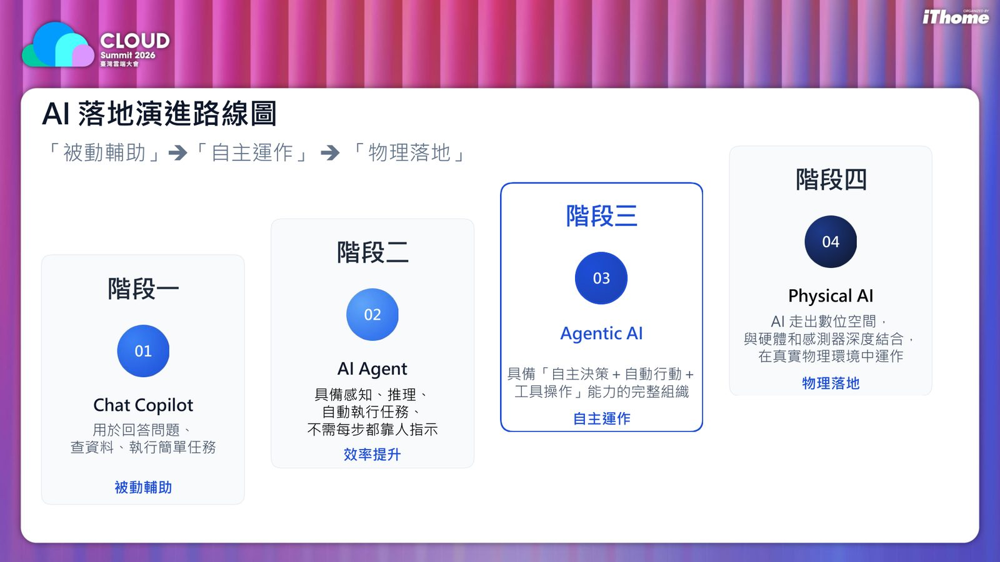
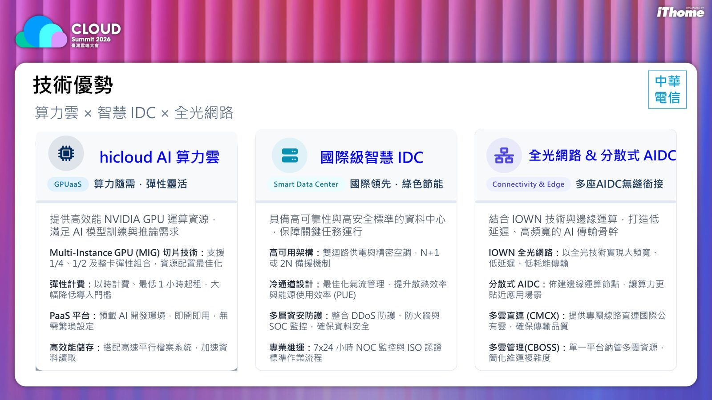
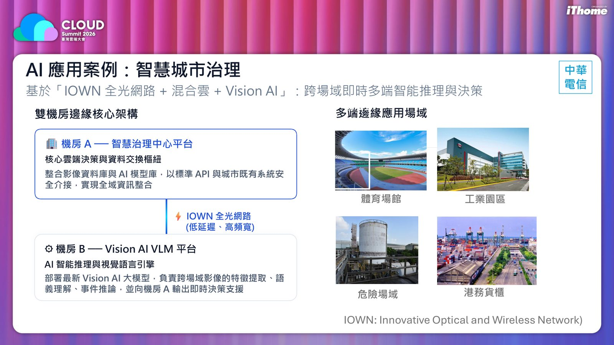
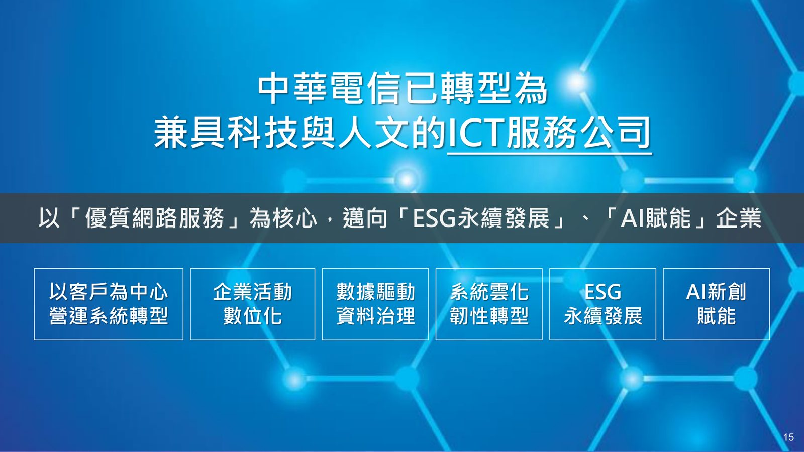

摘要
本場演講由中華電信雲端系統處科長分享 2023 至 2026 年間生成式 AI 從「驚艷期」「實驗期」「幻滅篩選期」走向「規模化期」的發展軌跡，並引用 Gartner 與 KPMG 報告說明台灣企業目前多處於「試點跨入規模化」階段，人才不足是最大瓶頸。演講進一步介紹 AI 落地的四階段演進路線圖（Chat Copilot、AI Agent、Agentic AI、Physical AI）、中華電信內部 AI 工具升級策略與依 ISO 42001 建立的 AI 治理制度，並以規格驅動開發（SDD）流程與 hicloud AI 算力雲、智慧城市治理案例，展示 AI 原生企業如何重構企業運作。
重點整理
- 生成式 AI 發展軌跡：2023 驚艷期、2024 實驗期、2025 幻滅篩選期（近八成 PoC 未通過商業效益考驗）、2026 規模化期
- 台灣企業多處於成熟度模型 Level 2 邁向 Level 3，正從「試點」跨入「規模化」並建立 AI 治理制度
- AI 落地四階段演進路線圖：被動輔助（Chat Copilot）→效率提升（AI Agent）→自主運作（Agentic AI）→物理落地（Physical AI）
- 中華電信依 ISO 42001 國際標準與《人工智慧基本法》建立涵蓋永續發展、人類自主、隱私保護、資安、透明可解釋、公平不歧視與問責七大原則的 AI 治理制度
- 以規格驅動開發（SDD）流程打造 ITSM 治理平台，人類職責從「寫程式」轉向「定義問題（Spec）」與「驗證成果（Acceptance）」
重點圖片／架構圖




生成式 AI 三年發展軌跡
講者回顧 2023 年 ChatGPT 帶來的「驚艷期」，全球首次感受生成式 AI 的震撼；2024 年進入「實驗期」，企業界大量啟動 PoC 專案並多點開花探索應用場景；2025 年則是「幻滅篩選期」，高達八成 PoC 專案未能通過生產環境與商業效益考驗，企業開始冷靜認清落地瓶頸；直到 2026 年正式邁入「規模化期」，技術與方法論已成熟到足以支持企業級規模化部署，競爭優勢的勝負將取決於組織的執行決心。
台灣企業 AI 成熟度與治理挑戰
根據 KPMG 2025 台灣產業 AI 應用趨勢報告，超過半數企業已開始應用或規劃將 AI 導入營運流程，但最大瓶頸仍是 AI 人才不足。演講提出五級成熟度模型（觀望、試點、規模化、整合、轉型），並指出台灣多數企業目前正處於 Level 2 邁向 Level 3 的階段，正在建立 AI 治理制度並將 AI Agent 生命週期管理納入規範。
AI 落地演進路線圖與工具升級
講者提出 AI 落地的四階段演進：階段一 Chat Copilot 用於回答問題與執行簡單任務（被動輔助）；階段二 AI Agent 具備感知、推理與自動執行任務的能力（效率提升）；階段三 Agentic AI 具備自主決策、自動行動與工具操作的完整組織能力（自主運作）；階段四 Physical AI 則走出數位空間，與硬體及感測器深度結合（物理落地）。中華電信也同步規劃內部工具升級，如從 GitHub Copilot 升級至 GitHub Enterprise、從個人版 NotebookLM 升級至團隊版等。
AI 治理制度與規格驅動開發實踐
中華電信依國際標準 ISO 42001 與政府《人工智慧基本法》建立完整 AI 管理制度，涵蓋永續發展與福祉、人類自主、隱私保護與資料治理、資安與安全、透明與可解釋、公平與不歧視、問責等七大原則。在實踐面，以 AI-Driven DLC 開發 ITSM 治理平台為例，透過 OKR 逐步拆解為 User Story、功能需求（FR）與非功能需求（NFR），再由 AI Coding Agent 依規格自動產生 Task、程式碼與單元測試，人類的價值也逐漸從「寫程式（Coding）」轉向「定義問題（Spec）」與「驗證成果（Acceptance）」。
算力基礎設施與智慧城市落地案例
中華電信以 hicloud AI 算力雲提供彈性計費的 NVIDIA GPU 運算資源，搭配具備高可用架構與多層資安防護的國際級智慧資料中心，並結合 IOWN 全光網路與邊緣運算打造低延遲高頻寬的 AI 傳輸骨幹。演講並以智慧城市治理為例，說明如何透過雙機房邊緣核心架構（智慧治理中心平台與 Vision AI VLM 平台），實現跨場域即時多端智能推理與決策。